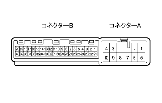

Inspection of television camera controller car |
| 1. Television camera controller inspection |
|  |
Conduction inspection
Use SST (Toyota Electrical Tester) to separate the connector A and check the conductor of the vehicle wire harness side connector.
| Tester connection | Measurement conditions | standard |
|---|---|---|
| GND1 (A8) ← → Body Earth | Always | There is an conductor |
Voltage inspection
Use SST (Toyota Electrical Tester) to separate the connector A and check the voltage between each terminal of the vehicle wire harness side connector.
| Tester connection | item | Measurement conditions | Reference value |
|---|---|---|---|
| +B (a1) ← → GND1 | Voltage | Always | 10-14V |
| IG (A2) ← → GND1 | Voltage | IG switch ON | 10-14V |
| ACC (A5) ← → GND1 | Voltage | IG Switch ACC | 10-14V |